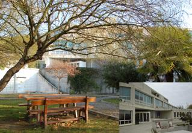
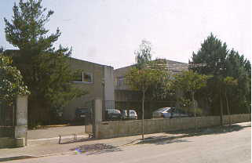
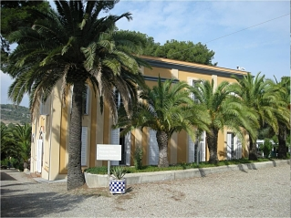

CIFO La Violeta
- 932 54 17 00
- cifo_violeta.soc@gencat.cat
- Lunes-Viernes: 8:00 AM to 21:00 PM
- Plaza del Conde de Sert, 25. 08035 Barcelona
- Acceso
- Bus: 60, H4, V15, bus barrio 124
- Metro: Vall d'Hebron + bus / Metro: Penitents+bus 124
- Coche: Ronda de Encima de B20, salida 6 (Vallcarca)

CIFO Sabadell
- 937 36 29 10
- cifo_sabadell.soc@gencat.cat
- Lunes-Viernes: 8:00 AM to 21:00 PM
- Carretera Nacionalm.22 Terrassa
- Acceso
- Bus C5 i C7 (interurbana de Sabadell Y Terrassa. Parada: Mancomunitat
- Salida 15 de la C58

CIFO Santa Coloma
- 93 254 17 00
- cifo_santacoloma.soc@gencat.cat
- Lunes-Viernes: 8:00 AM to 21:00 PM
- Estamos situados en una zona residencial y de equipamientos sociales. Dirección: avenida Ramon Berenguer IV, 74, Santa Coloma de Gramenet
- Acceso
- Metro L1 (estación Santa Coloma)
- Metro L9 - Norte (estación Singuerlín)
- Autobús B-30 (parada delante del Centro)
- B-20, B27 y B-80
CIFO L'Hospitalet
- 932 60 31 20
- cifo_hospitalet.soc@gencat.cat
- Lunes-Viernes: 8:00 AM to 21:00 PM
- Carretera del Mig, 24 (esquina calle Leonardo da Vinci) 08907 Hospitalet de Llobregat
- Acceso
- Ferrocarriles de la Generalitat de Catalunya (FGC), estación Sant Josep)
- Renfe cercanías (estación Bellvitge) Línea R2 destino final Vilanova i la Geltrú, Castelldefels, Aeropuerto
- Metro: Línea 9 estación Can Tries/Gornal
- Autobuses: L12, L52, parada en Enric Prat de la Riba/Ventura Gassol LH1, LH2, parada en Travessia Industrial/Miquel Romeu L14, parada en Avenida Fabregada/Cobalt l
CIFO LLeida
- 973 72 76 20
- cifo_lleida.soc@gencat.cat
- Lunes-Viernes: 8:00 AM to 21:00 PM
- Plaza del Conde de Sert, 25. 08035 Barcelona
- Acceso
- Bus: 60, H4, V15, bus barrio 124
- Metro: Vall d'Hebron + bus / Metro: Penitents+bus 124
- Coche: Ronda de Encima de B20, salida 6 (Vallcarca)

CIFO Salt
- 972 40 55 70
- cifo_salt.soc@gencat.cat
- Lunes-Viernes: 8:00 AM to 21:00 PM
- c/Alfons Moré, 1, Salt 17190
- Acceso
- El acceso al centro se puede hacer mediante transporte público: L3 i L4
CIFO San Feliu
- 936 85 77 90
- cifo_santfeliu.soc@gencat.cat
- Lunes-Viernes: 8:00 AM to 21:00 PM
- c/Hospitalet, 3 (esquina N-II) 08980 - Sant Feliu de Llobregat (Barcelona)

CIFO Tarragona
- 977 25 15 66
- cifo_tarragona.soc@gencat.cat
- Lunes-Viernes: 8:00 AM to 21:00 PM
- Cami de la Budellera s/n – 43007 Tarragona
- Acceso
- Autobuses L1 y L9, L11, L12, y L13